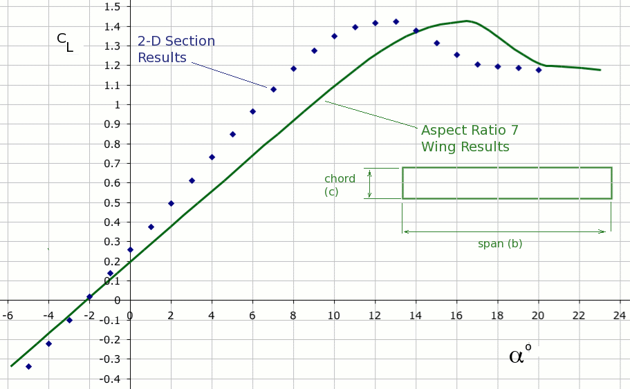

Lift and Lift Coefficient
The aircraft generates lift by moving quickly through the air. The wings of the vehicle have aerofoil shaped cross-sections. For a given flow speed with the aerofoil set at an angle of attack to the oncoming airstream, a pressure difference between upper and lower wing surfaces will be created. There will be a high pressure region underneath and a very low pressure region on top. The difference in these pressure forces creates lift on the wing. The lift produced will be proportional to the size of the aircaft; the square of its velocity; the density of the surrounding air and the angle of attack of the wing to on-coming flow.
To simplify the problem, lift is typically measured as a non-dimensional coefficient.
$$C_L={\text"Lift"}/{1/2ρV^2S}$$
In the normal range of operations the variation of lift coefficent with angle of attack of the vehicle will be approximately linear,
$$ C_L=aα+C_{L0}= a(α-α_{0})$$
where
$$a = {∂C_L}/{∂α}=C_{Lα}$$
Lift coefficient increases up to a maximum value at which point the wing flow stalls and lift reduces.
The values of the lift curve gradient and maximum lift coefficient are effected by the shape of the wing, its twist distribution, the type of aerofoil section used, the flap configuration and most importantly by the amount of down-wash flow induced on the wing by the trailing wing tip vorticies.
A simple approximation for straight, moderate to high aspect ratio wings is to assume an elliptical span-wise load distribution which gives the following result,
$$C_{Lα}= {a_0}/{(1+a_0/{πARe})}$$
where $a_0$ is the 2D section lift curve slope result and $e$ is the wing planform efficiency factor. In many cases the 2D section lift curve slope $a_0≈2π$ per radian and the efficiency factor $e≈1$ so that a simple approximation is
$$C_{Lα}={2π}/{1+2/{AR}}$$
Calculation of zero angle lift coefficient $C_{L0}$ or zero lift angle $α_0$ can be done by assuming that the zero lift angle for the aircraft equals the zero lift angle of the 2D aerofoil section adjusted for the wing incidence setting. 2D section properties such as zero lift angle can be calculated from analysis of the aerofoil geometry using a method such as thin-aerofoil theory or panel method analysis. A rough approximation is that zero lift angle for the section lies between -3o and -1.5o.
Calculation of maximum lift coefficient can be again take as approximately equal to the two dimensional section value. A typical aerofoil and wing $C_L$ versus α graph is shown in the following Figure. Results for the two-dimensional section and an aspect ratio 7 rectangular wing using this section are shown.

For swept wings, wings with complex taper or wings with flaps, a more accurate calculation needs to be undertaken using either lifting line theory or the vortex lattice method.
Minimum Flying Speed
From the the typical lift coefficient graph, it can be seen that there exists a maximum lift coefficient ( $C_L(max)$ ) for the aircraft. This sets the absolute lower speed limit for flight. If the aircraft attempts level flight below this minimum speed then the required lift coefficient would exceed the maximum available, thus lift would be less than weight and the aircraft would begin to fall.
Using angles of attack that exceed the maximum lift coefficient causes the wing flow to separate and the aircraft to stall. So, the minimum speed where the aircraft is a maximum lift coefficient is called the stall speed.
By applying the equilibrium equation at this speed, the stall conditions can be calculated.
$$L=W\text" "W=C_L1/2ρV^2S$$
so stall speed will be
$$V_{stall}=√{W/{1/2C_{L(max)}ρS}}$$